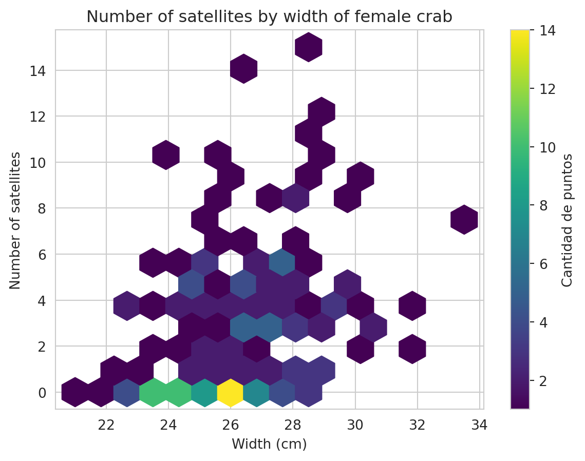
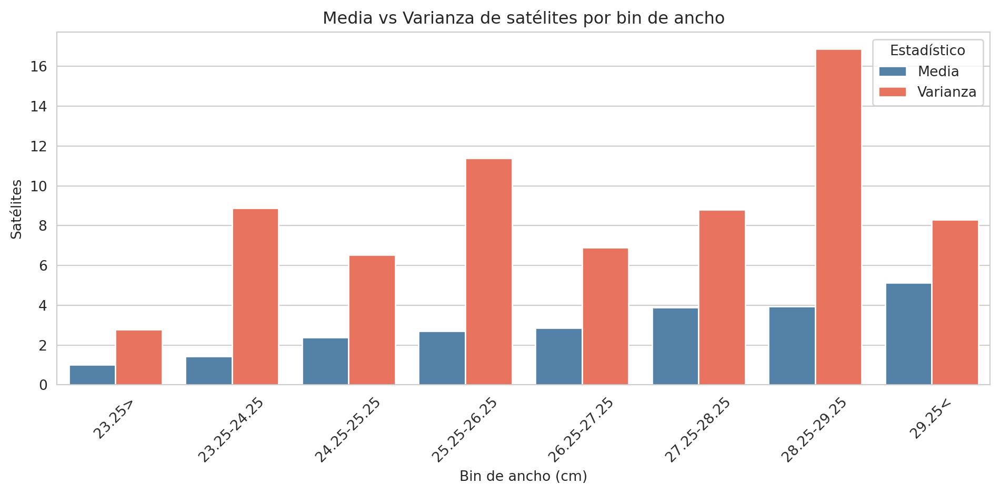
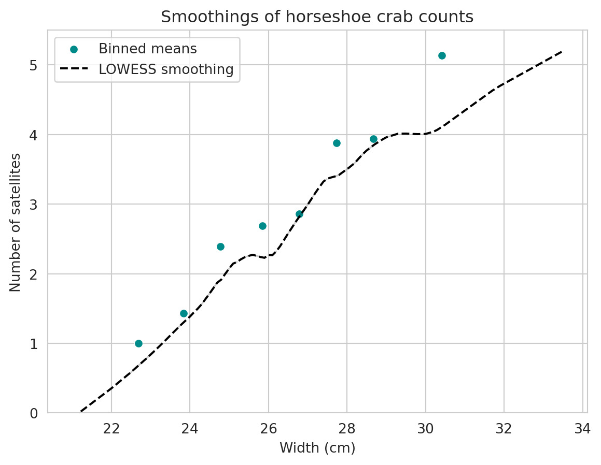
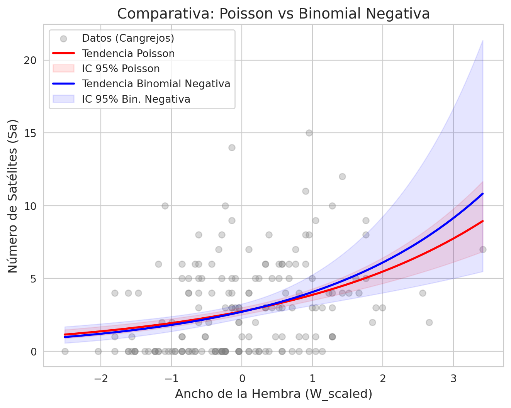

Code
import pandas as pd
import numpy as np
import statsmodels.formula.api as smf
from statsmodels.nonparametric.smoothers_lowess import lowess
import matplotlib.pyplot as plt
import seaborn as sns
sns.set_style('whitegrid')C: color (1, light medium; 2, medium; 3, dark medium; 4, dark).S: spine condition (1, both good; 2, one worn or broken; 3, both worn or broken).W: carapace width, cm.Wt: weight, kg.Sa: number of satellites.import pandas as pd
import numpy as np
import statsmodels.formula.api as smf
from statsmodels.nonparametric.smoothers_lowess import lowess
import matplotlib.pyplot as plt
import seaborn as sns
sns.set_style('whitegrid')df = pd.read_csv('../data/agresti_crab_satellites_dataset.csv')
display(df.head())
print(df.shape)| C | S | W | Wt | Sa | |
|---|---|---|---|---|---|
| 0 | 2 | 3 | 28.3 | 3.05 | 8 |
| 1 | 3 | 3 | 26.0 | 2.60 | 4 |
| 2 | 3 | 3 | 25.6 | 2.15 | 0 |
| 3 | 4 | 2 | 21.0 | 1.85 | 0 |
| 4 | 2 | 3 | 29.0 | 3.00 | 1 |
(173, 5)df.describe()| C | S | W | Wt | Sa | |
|---|---|---|---|---|---|
| count | 173.000000 | 173.000000 | 173.000000 | 173.000000 | 173.000000 |
| mean | 2.439306 | 2.485549 | 26.298844 | 2.437225 | 2.919075 |
| std | 0.801933 | 0.825516 | 2.109061 | 0.577255 | 3.148336 |
| min | 1.000000 | 1.000000 | 21.000000 | 1.200000 | 0.000000 |
| 25% | 2.000000 | 2.000000 | 24.900000 | 2.000000 | 0.000000 |
| 50% | 2.000000 | 3.000000 | 26.100000 | 2.350000 | 2.000000 |
| 75% | 3.000000 | 3.000000 | 27.700000 | 2.850000 | 5.000000 |
| max | 4.000000 | 3.000000 | 33.500000 | 5.200000 | 15.000000 |
plt.figure(figsize=(7, 5))
hb = plt.hexbin(df['W'], df['Sa'], gridsize=15, cmap='viridis', mincnt=1)
plt.colorbar(hb, label='Cantidad de puntos')
plt.title('Number of satellites by width of female crab')
plt.xlabel('Width (cm)')
plt.ylabel('Number of satellites')
plt.show()
df['W_cat'] = pd.cut(
df['W'],
bins = [-1, 23.25, 24.25, 25.25, 26.25, 27.25, 28.25, 29.25, np.inf],
labels = ['23.25>','23.25-24.25','24.25-25.25','25.25-26.25','26.25-27.25','27.25-28.25','28.25-29.25','29.25<']
)
cat_summary = df.groupby('W_cat').agg(
n_obs = ('W_cat','count'),
sum_satellites = ('Sa','sum'),
mean_satellites = ('Sa','mean'),
var_satellites = ('Sa','var'),
mean_w = ('W','mean')
).round(2)
cat_summary = cat_summary.reset_index()
display(cat_summary)| W_cat | n_obs | sum_satellites | mean_satellites | var_satellites | mean_w | |
|---|---|---|---|---|---|---|
| 0 | 23.25> | 14 | 14 | 1.00 | 2.77 | 22.69 |
| 1 | 23.25-24.25 | 14 | 20 | 1.43 | 8.88 | 23.84 |
| 2 | 24.25-25.25 | 28 | 67 | 2.39 | 6.54 | 24.78 |
| 3 | 25.25-26.25 | 39 | 105 | 2.69 | 11.38 | 25.84 |
| 4 | 26.25-27.25 | 22 | 63 | 2.86 | 6.89 | 26.79 |
| 5 | 27.25-28.25 | 24 | 93 | 3.88 | 8.81 | 27.74 |
| 6 | 28.25-29.25 | 18 | 71 | 3.94 | 16.88 | 28.67 |
| 7 | 29.25< | 14 | 72 | 5.14 | 8.29 | 30.41 |
plot_df = cat_summary[['W_cat', 'mean_satellites', 'var_satellites']].melt(
id_vars='W_cat', var_name='Estadístico', value_name='valor'
)
plot_df['Estadístico'] = plot_df['Estadístico'].map({
'mean_satellites': 'Media',
'var_satellites': 'Varianza'
})
fig, ax = plt.subplots(figsize=(10, 5))
sns.barplot(
x='W_cat', y='valor', hue='Estadístico', data=plot_df,
palette=['steelblue', 'tomato'], ax=ax
)
ax.set_xlabel('Bin de ancho (cm)')
ax.set_ylabel('Satélites')
ax.set_title('Media vs Varianza de satélites por bin de ancho')
ax.tick_params(axis='x', rotation=45)
plt.tight_layout()
plt.show()
smooth_series = pd.DataFrame(lowess(df['Sa'], df['W'], frac=0.5), columns=['W','Sa'])
display(smooth_series.head())| W | Sa | |
|---|---|---|
| 0 | 21.0 | -0.075135 |
| 1 | 22.0 | 0.352513 |
| 2 | 22.5 | 0.585080 |
| 3 | 22.5 | 0.585080 |
| 4 | 22.5 | 0.585080 |
plt.figure(figsize=(7, 5))
sns.scatterplot(x='mean_w', y='mean_satellites', data=cat_summary, color='darkcyan', label='Binned means')
sns.lineplot(x='W', y='Sa', data=smooth_series, label='LOWESS smoothing', linestyle='--', color='black')
plt.title('Smoothings of horseshoe crab counts')
plt.xlabel('Width (cm)')
plt.ylabel('Number of satellites')
plt.ylim(0,5.5)
plt.show()
# Escalado de W
mean_W = df['W'].mean()
std_W = df['W'].std()
df['W_scaled'] = (df['W']-mean_W)/std_Wmodel = smf.poisson(formula="Sa ~ W_scaled", data=df)
results = model.fit(disp=0)
print(results.summary()) Poisson Regression Results
==============================================================================
Dep. Variable: Sa No. Observations: 173
Model: Poisson Df Residuals: 171
Method: MLE Df Model: 1
Date: Sun, 26 Apr 2026 Pseudo R-squ.: 0.06570
Time: 21:50:40 Log-Likelihood: -461.59
converged: True LL-Null: -494.04
Covariance Type: nonrobust LLR p-value: 7.828e-16
==============================================================================
coef std err z P>|z| [0.025 0.975]
------------------------------------------------------------------------------
Intercept 1.0094 0.047 21.445 0.000 0.917 1.102
W_scaled 0.3460 0.042 8.216 0.000 0.263 0.429
==============================================================================print((26.3 - mean_W) / std_W)
print((27.3 - mean_W) / std_W)
0.0005481441165499528
0.47469280493424015results.predict(pd.DataFrame({'W_scaled':[0, 0.5]}))0 2.744061
1 3.262290
dtype: float64model_nb = smf.negativebinomial(formula="Sa ~ W_scaled", data=df)
results_nb = model_nb.fit(disp=0)
print(results_nb.summary()) NegativeBinomial Regression Results
==============================================================================
Dep. Variable: Sa No. Observations: 173
Model: NegativeBinomial Df Residuals: 171
Method: MLE Df Model: 1
Date: Sun, 26 Apr 2026 Pseudo R-squ.: 0.02100
Time: 21:50:40 Log-Likelihood: -375.65
converged: True LL-Null: -383.70
Covariance Type: nonrobust LLR p-value: 5.951e-05
==============================================================================
coef std err z P>|z| [0.025 0.975]
------------------------------------------------------------------------------
Intercept 0.9988 0.093 10.730 0.000 0.816 1.181
W_scaled 0.4051 0.100 4.033 0.000 0.208 0.602
alpha 1.1055 0.197 5.609 0.000 0.719 1.492
==============================================================================results_nb.predict(pd.DataFrame({'W_scaled':[0, 0.5]}))0 2.714968
1 3.324519
dtype: float64# Comparación rápida de Log-Likelihood
ll_poisson = results.llf # Tu modelo previo
ll_nb = results_nb.llf
lr_stat = 2 * (ll_nb - ll_poisson)
print(f"Estadístico de la razón de verosimilitud: {lr_stat:.4f}")Estadístico de la razón de verosimilitud: 171.8853x_range = np.linspace(df['W_scaled'].min(), df['W_scaled'].max(), 100)
df_plot = pd.DataFrame({'W_scaled': x_range})
# 3. Obtener predicciones e intervalos de confianza (95%)
# Para el modelo Poisson (tu objeto 'results')
pred_poisson = results.get_prediction(df_plot).summary_frame(alpha=0.05)
# Para el modelo Binomial Negativa
pred_nb = results_nb.get_prediction(df_plot).summary_frame(alpha=0.05)
# 4. Visualización
plt.figure(figsize=(8, 6))
# Graficar los datos originales
plt.scatter(df['W_scaled'], df['Sa'], alpha=0.3, color='gray', label='Datos (Cangrejos)')
# Curva Poisson
plt.plot(x_range, pred_poisson['predicted'], color='red', lw=2, label='Tendencia Poisson')
plt.fill_between(x_range, pred_poisson['ci_lower'], pred_poisson['ci_upper'],
color='red', alpha=0.1, label='IC 95% Poisson')
# Curva Binomial Negativa
plt.plot(x_range, pred_nb['predicted'], color='blue', lw=2, label='Tendencia Binomial Negativa')
plt.fill_between(x_range, pred_nb['ci_lower'], pred_nb['ci_upper'],
color='blue', alpha=0.1, label='IC 95% Bin. Negativa')
plt.title('Comparativa: Poisson vs Binomial Negativa', fontsize=14)
plt.xlabel('Ancho de la Hembra (W_scaled)', fontsize=12)
plt.ylabel('Número de Satélites (Sa)', fontsize=12)
plt.legend()
plt.show()
# Comparación de Criterios de Información
print(f"AIC Poisson: {results.aic:.2f}")
print(f"AIC Binomial Negativa: {results_nb.aic:.2f}")/home/javolet/documents/bayesian-glm-count-data/.venv/lib/python3.11/site-packages/statsmodels/base/_prediction_inference.py:782: UserWarning: using default log-link in get_prediction
warnings.warn("using default log-link in get_prediction")
AIC Poisson: 927.18
AIC Binomial Negativa: 757.29